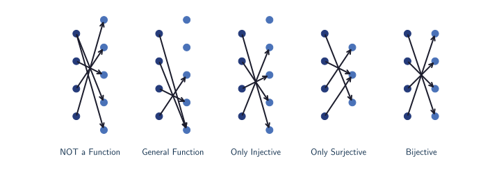

Chapter 2 • Vector Spaces
2.1 Foundations: Sets, Maps, and Algebraic Structures
Before formally defining vector spaces, we review some necessary set-theoretic and the algebraic structures (groups, rings, fields) upon which the concept of vector spaces is built (rows 1 and 2 of Figure 1.2).
A set \(\mathcal{M}\) is a well-defined collection of elements1 \(m\in \mathcal{M}\). For example, the set of real numbers \(\mathcal{M}\coloneqq \mathbb{R}\) is formed by all real numbers: \(\mathcal{M} \coloneqq \lbrace ..., -\pi, -2.34, -1, 0, 1/2, e, 10^{27}, ...\rbrace.\)
We say that \(\phi\) is a map from the set \(\mathcal{M}\) (domain) to the set \(\mathcal{N}\) (target), denoted as \begin{align*} \phi : \mathcal{M} &\longrightarrow \mathcal{N}\\ p &\mapsto \phi(p), \end{align*} if all the elements of \(\mathcal{M}\) are mapped to elements of \(\mathcal{N}\): \begin{align*} \forall p \in \mathcal{M},\, \exists n \in \mathcal{N} : \phi(p) = n. \end{align*}
\(\phi\) is injective if different elements in \(\mathcal{M}\) are always mapped to different elements in \(\mathcal{N}\): \[ \forall p_1, p_2 \in \mathcal{M},\; \phi(p_1) = \phi(p_2) \iff p_1 = p_2. \]
\(\phi\) is surjective if every element of the target \(\mathcal{N}\) is covered by the map: \[ \forall n \in \mathcal{N},\; \exists p \in \mathcal{M} : \phi(p) = n. \]
\(\phi\) is bijective if it is both injective and surjective, hence \(\phi\) establishes a one-to-one correspondence between the elements of \(\mathcal{M}\) and \(\mathcal{N}\). In this case, there exists an inverse map, \begin{align*} \phi^{-1} : \mathcal{N} &\longrightarrow \mathcal{M}\\ n &\mapsto \phi^{-1}(n), \end{align*} such that \[ \phi^{-1} \circ \phi = \text{id}_{\mathcal{M}} \quad \text{and} \quad \phi \circ \phi^{-1} = \text{id}_{\mathcal{N}}. \]

Figure 2.1: Examples illustrating the fundamental properties of maps between sets: injectivity, surjectivity, and bijectivity. The first panel (“NOT a Function”) shows a relation where some elements in the domain are assigned to multiple elements in the target, which violates the definition of a function. The second panel (“General Function”) depicts a valid function where elements of the domain are assigned to elements of the target, but the function is neither injective nor surjective. The third panel (“Only Injective”) shows a function where distinct elements of the domain map to distinct elements of the target (injective), but not every element in the target is covered (not surjective). The fourth panel (“Only Surjective”) presents a function that covers every element of the target (surjective), but some distinct domain elements map to the same target element (not injective). The final panel (“Bijective”) shows a function that is both injective and surjective, establishing a one-to-one correspondence between domain and target, and admitting an inverse function. Given two sets \(\mathcal{M}\) and \(\mathcal{N}\), their Cartesian product is the set \(\mathcal{M} \times \mathcal{N}\) of ordered pairs \((m, n)\) with \(m \in \mathcal{M}\) and \(n \in \mathcal{N}\). It satisfies the following properties:
Set membership: \((m, n) \in \mathcal{M} \times \mathcal{N} \iff m \in \mathcal{M}\) and \(n \in \mathcal{N}\).
Projections: There exist projection maps \[ \begin{aligned} \pi_\mathcal{M} \colon \mathcal{M} \times \mathcal{N} &\longrightarrow \mathcal{M} \\ (m, n) &\longmapsto \pi_\mathcal{M}(m, n) \coloneqq m \end{aligned} \qquad \text{and} \qquad \begin{aligned} \pi_\mathcal{N} \colon \mathcal{M} \times \mathcal{N} &\longrightarrow \mathcal{N} \\ (m, n) &\longmapsto \pi_\mathcal{N}(m, n) \coloneqq n \end{aligned} \] which extract the first and second components of each pair, respectively.
Associativity: For three sets \(\mathcal{M}_1\), \(\mathcal{M}_2\), and \(\mathcal{M}_3\), the products \(\mathcal{M}_1 \times (\mathcal{M}_2 \times \mathcal{M}_3)\) and \((\mathcal{M}_1 \times \mathcal{M}_2) \times \mathcal{M}_3\) are technically different sets because their elements are nested pairs: \((m_1, (m_2, m_3))\) versus \(((m_1, m_2), m_3)\). However, there is an obvious one-to-one correspondence between them that simply reorders the parentheses: \((m_1, (m_2, m_3)) \;\leftrightarrow\; (m_1, m_2, m_3) \;\leftrightarrow\; ((m_1, m_2), m_3).\) Because of this, it is common and harmless to write \((m_1, m_2, m_3)\) without worrying about how the pairs are grouped.
Extension to multiple factors: \[ \mathcal{M}^n := \underbrace{\mathcal{M} \times \dots \times \mathcal{M}}_{n\text{-times}} = \{ (m_1, \dots, m_n) \mid m_k \in \mathcal{M} \;\forall k=1,\dots,n \}. \]
Cardinality: If \(|\mathcal{M}| = d_1\) and \(|\mathcal{N}| = d_2\), then \(|\mathcal{M} \times \mathcal{N}| = d_1 \cdot d_2\). This extends to products of \(n\) sets.
An Abelian group is the doublet \((\mathbb{R}, +)\) where \(\mathbb{R}\) is a set, and \(+\) represents an addition operation, \(+: \mathbb{R} \times \mathbb{R} \to \mathbb{R}\) satisfying (with \(\alpha, \beta \in \mathbb{R}\)):
Commutativity: \(\alpha + \beta = \beta + \alpha\),
Associativity: \((\alpha_1 + \alpha_2) + \alpha_3 = \alpha_1 + (\alpha_2 + \alpha_3)\),
Neutral element / Unitarity / Identity: \(\exists 0 \in \mathbb{R}\) such that \(\alpha + 0 = \alpha\),
Inverse element: \(\exists (-\alpha) \in \mathbb{R}\) such that \(\alpha + (-\alpha) = 0\).
A Ring is a triplet \((\mathbb{R}, +, \cdot)\) composed by an Abelian group \((\mathbb{R}, +)\), equipped additionally with a multiplication operator \(\cdot: \mathbb{R} \times \mathbb{R} \to \mathbb{R}\) satisfying:
Neutral element / Unitarity / Identity: \(\exists 1 \in \mathbb{R}\) such that \(\alpha \cdot 1 = \alpha \cdot 1 = \alpha\),
Associativity: \((\alpha_1 \cdot \alpha_2) \cdot \alpha_3 = \alpha_1 \cdot (\alpha_2 \cdot \alpha_3)\).
And the addition and multiplication operators must also have the following properties when used in combination:
Distributive (left): \(\alpha_1 \cdot (\alpha_2 + \alpha_3) = (\alpha_1 \cdot \alpha_2) + (\alpha_1 \cdot \alpha_3)\)),
Distributive (right): \((\alpha_2 + \alpha_3) \cdot \alpha_1 = (\alpha_2 \cdot \alpha_1) + (\alpha_3 \cdot \alpha_1)\).
A Field is a Ring \((\mathbb{R}, +, \cdot)\) with two extra properties:
Commutativity (w.r.t \(\cdot\)): \(\alpha \cdot \beta = \beta \cdot \alpha\),
Inverse element (w.r.t \(\cdot\)): \(\exists (\alpha^{-1}) \in \mathbb{R}\) such that \(\alpha \cdot (\alpha^{-1}) = 1\).
The field of real numbers \((\mathbb{R}, +, \cdot)\) serves as the prototypical example in these notes. However, in more general mathematical contexts, other fields are frequently used. Unless stated otherwise, vector spaces in these notes (see below) are always defined over the field \(\mathbb{R}\).
Throughout these notes, I will also often use the lowercase letter \(p\) to denote a generic element of a set \(\mathcal{M}\), and similarly use \(\mathcal{N}\) to denote another different set with generic elements denoted by \(n \in \mathcal{N}\).
A brief discussion of the set-theoretic framework adopted in these notes can be found in Appendix B.1.